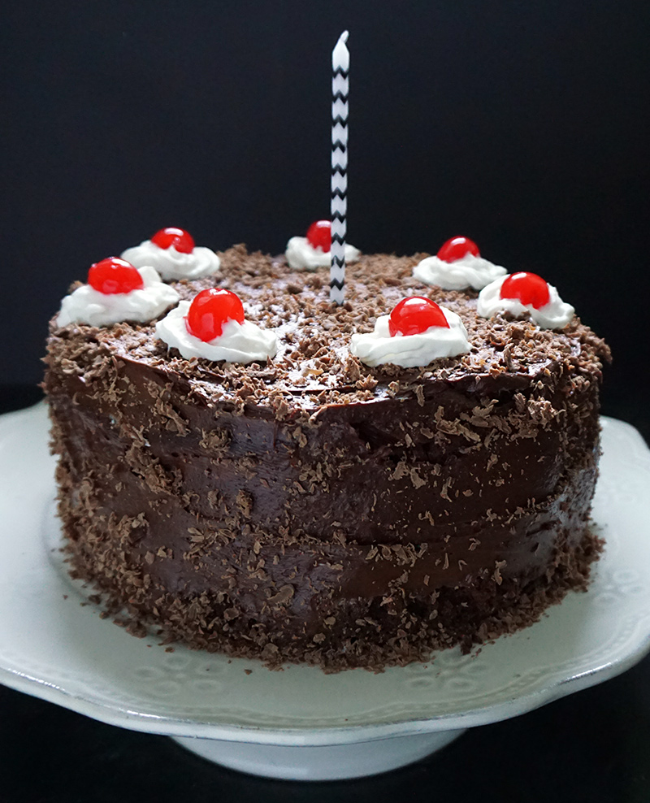

Chocolate cake

Description
Here is how to make a chocolate cake:
Ingredients
- 1 1/2 cups (3 sticks) unsalted butter, plus more for greasing the pans
- 3/4 cup unsweetened cocoa powder, plus more for pans
- 1/2 cup boiling water
- 2 1/4 cups sugar or granulated sugar substitute
- 1 Tbsp pure vanilla extract
- 4 large eggs, lightly beaten
- 3 cups sifted cake flour
- 1 tsp baking soda
- 1/2 ttsp salt
- 1 cup milk
- Chocolate and vanilla frosting of your choice
- 2 (1.55-oz) chocolate bars, grated
- Maraschino cherries
- Whipped cream
Steps
- Preheat oven to 350 F. Butter three 8-inch round cake pans and dust bottoms and sides of pans with cocoa
powder; tap out any excess. Sift cocoa into a medium bowl, and whisk in boiling water. Set aside to cool.
- In the bowl of an electric mixer fitted with the paddle attachment, cream butter on low speed until light
and fluffy. Gradually beat in sugar until light and fluffy, 3 to 4 minutes, scraping down sides. Beat in
vanilla.
- Slowly add in lightly beated eggs, beating between each addition, scraping down the sides as needed.
- In a large bowl, sift together flour, baking soda, and salt. Whisk milk into reserved cocoa mixture. With
mixer on low speed, alternately add flour and cocoa mixtures to the batter.
- Divide batter evenly among the pans. Bake until a cake tester comes out clean, 35 to 45 minutes. Transfer
layers to wire racks and let cool for 15 minutes. Turn out cakes, and return to racks, tops up, until
completely cool.
- Place one cake layer on a serving platter; spread 1 1/2 cups vanilla frosting over the top. Add the second
cake layer, and spread with another 1 1/2 cups vanilla frosting. Top with third cake layer. Cover outside of
cake with 3 cups of the chocolate frosting.
- Sprinkle with chocolate shavings and top which dollops of whipped cream and cherries as shown.